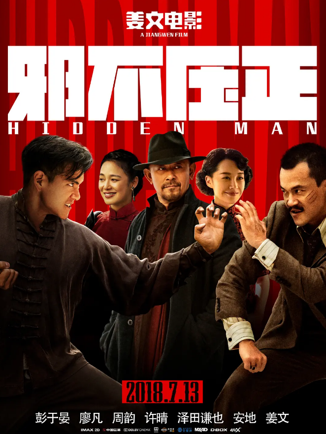

基本信息《邪不压正》是2018年中国大陆武侠动作喜剧片，由姜文导演，彭于晏、廖凡、周韵、姜文等主演。影片改编自作家张北海武侠小说《侠隐》，讲述1936年发生在北平城的间谍斗争。影片是姜文“北洋三部曲”的终章，于2018年7月13日在中国大陆上映。
|
 |
剧情概要1936年的北平，青年侠士李天然为寻找十五年前师门血案的元凶，深入古都的胡同巷陌。 随着他调查的深入，京城各路人马的斗智斗狠浮出水面，日本特务、亲日分子、豪门旧户、黑帮老大、交际花、外国记者等轮番上阵。 老百姓的日子依旧悠悠然地过着。庙会、堂会依循旧例；东城、西城一如往日。人情冷暖、旧京风华扑面而来。 然而，随着卢沟桥一声枪响，北平淹没在战争烟尘中，故事里的人们又将何去何从…… |
电影预告片
|